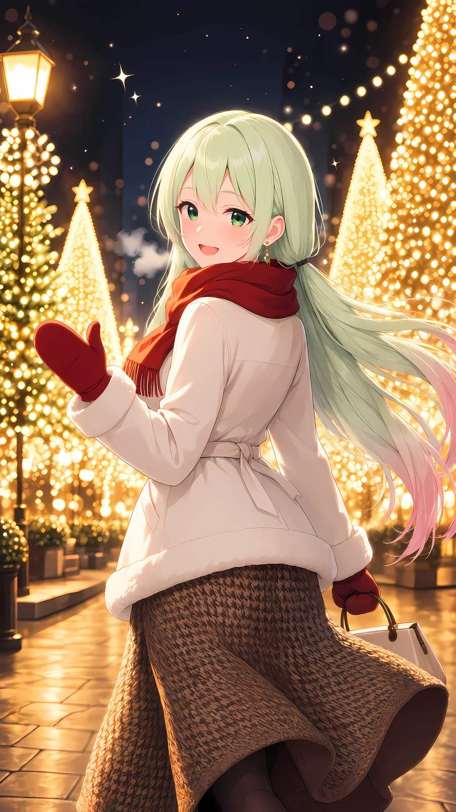
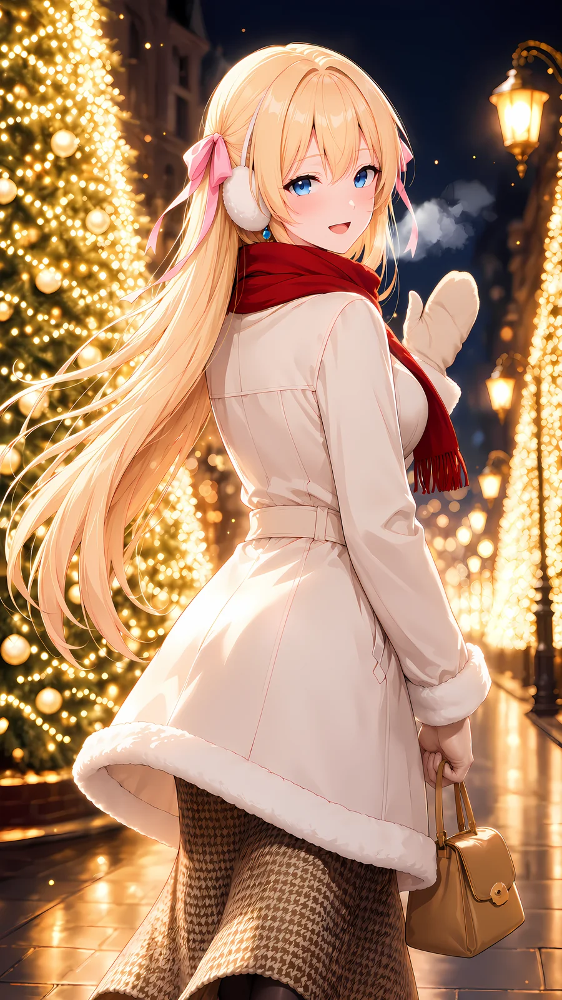
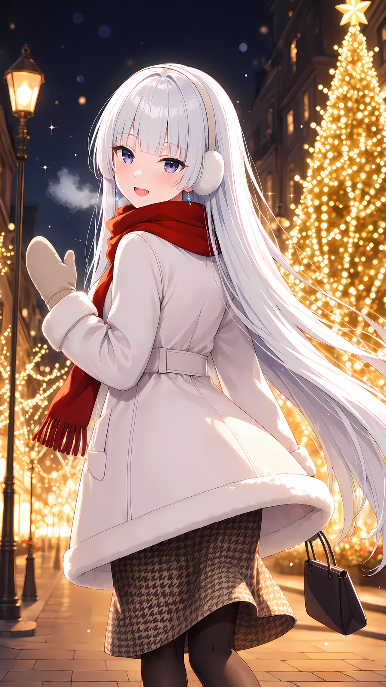
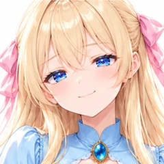
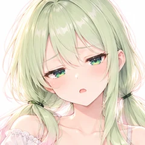

光のトンネルの並木道で振り返って手を振る冬のコート（ComfyUI シーンのプロンプト）
ひみつの眠り姫のプロンプト配布
ComfyUI 用2026-10-27
ComfyUI（Anima）に貼るだけで、冬のイルミネーションの一枚に。枝の先まで電球が灯る並木道で、白いコートに赤いマフラーとミトンの女の子が、振り返ってこちらへ手を振ります。白い息、街灯、石畳に映る金色の光と、たくさんの玉ボケ。LoRA をお持ちでない方は、先頭の行の髪と瞳の色をあなたの子に合わせれば、そのまま近づけられます。
作例



※作例の画像の転載・保存しての再配布はご遠慮ください。
3人のおしゃべり（白い息の形あて）

ティルナ
うわあ、並木がぜんぶ光ってる！ 枝の先まで電球で、光のトンネルだよー！

セフィリア
まあ、枝の先まで電球が。まるで星でできた並木道ですね

リリア
……息が、白いです。灯りの前だと、よく見えます

ティルナ
ほんとだ！ じゃあ、息の形あてっこしよう！ はーっ……これ、なんに見える？

セフィリア
ふわっと丸くて……湯気の立つ肉まん、でしょうか
リリア
わたしには、ひつじに見えます。小さな、ひつじ
ティルナ
ちがうよー、ハートだよ！ もう一回、はーっ！

セフィリア
今度は……ふたつに割った肉まんですね

ティルナ
肉まんから離れてー！

リリア
ふふ。振り返って手を振るティルナちゃん、この絵みたいに、息まできらきらしています
セフィリア
わたくしたちの作例は、耳あてと白いミトンでした。ティルナは赤いミトンで、手を振ると灯りの中でよく目立ちますね
リリア
手さげのバッグも、三人とも色がちがいました。わたしは黒、セフィリア様はキャラメル色です
セフィリア
このプロンプトなら、白いコートに赤いマフラーの子が、光の並木で振り返ってくれます
ティルナ
あなたの子にも、ミトンで手を振ってもらおう！ 白い息も、いっしょに焼けるよ！
リリア
LoRA をお持ちでない方は、先頭の行の髪と瞳の色を書き換えるだけで大丈夫です

セフィリア
……ところで、さきほどから肉まんのお話ばかりで、わたくし、おなかが
ティルナ
じゃあトンネルの出口で肉まん買って、三人で白い息ごと食べよう！
使い方（3ステップ）
- ComfyUI で Anima のモデルを読み、基本の画像生成（テキストから画像）の画面にする
- 下の A（LoRA なし）か B（LoRA あり）のポジティブと、ネガティブをワンタップでコピーして貼る
- 「推奨値」の大きさ・steps・CFG にして生成する（できれば 1.5 倍の hires fix も）
プロンプト
変えるのは1行目の色の付いたところだけ（先頭の
1girl, solo などはそのまま）- 使うプロンプトは2通り＝A. LoRA を持っていない人／B. 自分のキャラの LoRA を持っている人。どちらも丸ごとコピーして貼るだけ
- A はそのままでも綺麗な女の子で出ます。自分のキャラにするなら1行目の髪の色・髪型・目の色を書き換えるだけ
- B は1行目の
your_lora_triggerを自分の LoRA のトリガー語に置きかえるだけ（LoRA の強さは下の表） - 2行目から下（シーン）と、ネガティブプロンプトは変えずにそのまま
- 🚫 版権キャラの名前・版権キャラの LoRA を入れて使うのは固く禁止です（下の「配布ルール」）
A. LoRA を持っていない人（そのままでもOK）
ポジティブプロンプト
1girl, solo, long hair, green hair, pink hair, gradient hair, green eyes, low twintails masterpiece, best quality, score_7, safe, cowboy shot, from behind, looking back, looking at viewer, smile, open mouth, blush, walking, waving, breath, winter coat, white coat, fur collar, fur trim, long sleeves, red scarf, mittens, long skirt, knit skirt, brown skirt, houndstooth, black pantyhose, handbag, holding handbag, earmuffs, earrings, christmas lights, string of light bulbs, street lamp, outdoors, night, bokeh, light particles, warm colors, backlighting, depth of field, floating hair, wind, sparkle
B. 自分のキャラの LoRA を持っている人
ポジティブプロンプト（LoRA 用）
masterpiece, best quality, score_7, year 2025, highres, absurdres, your_lora_trigger, 1girl, solo, cowboy shot, from behind, looking back, looking at viewer, smile, open mouth, blush, walking, waving, breath, winter coat, white coat, fur collar, fur trim, long sleeves, red scarf, mittens, long skirt, knit skirt, brown skirt, houndstooth, black pantyhose, handbag, holding handbag, earmuffs, earrings, christmas lights, string of light bulbs, street lamp, outdoors, night, bokeh, light particles, warm colors, backlighting, depth of field, floating hair, wind, sparkle
| LoRA のつなぎ方 | Load Diffusion Model（Anima）のうしろに LoraLoaderModelOnly を1つ足す（CLIP にはつながない） | |
|---|---|---|
| LoRA の強さ（strength_model） | 0.8〜0.9（作例は 0.85） | |
| 1行目 | your_lora_trigger を自分の LoRA のトリガー語に置きかえる（髪や目の色は LoRA が覚えているので書かなくてOK） | |
ネガティブプロンプト（B 用）
lowres, bad quality, worst quality, score_1, score_2, score_3, poorly drawn, flat color, sketch, jpeg artifacts, mutated, ugly, disfigured, long body, bad anatomy, bad hands, missing fingers, extra fingers, simple background, transparent background, blurry, furry, child, loli, chibi, baby face, signature, watermark, artist name, username, web address, patreon username, logo, detailed pupils, sparkling eyes, twinkling eyes, glowing pupils, glowing eyes, star-shaped pupils, colored highlight in pupil, pointy ears, elf ears, extra fingers, missing fingers, fused fingers, bad hands, deformed hands, 2girls, male, school bag, satchel, randoseru, school uniform, serafuku, pleated skirt, miniskirt, plaid skirt, japanese text, chinese text, korean text, kanji, hiragana, katakana, calligraphy
作例の絵（ポストの絵）は、この B のポジティブとネガティブで作りました（
ネガティブの「pointy ears、elf ears」は作例の子のために足した語です。自分のキャラに合わなければ消してOK。
your_lora_trigger のところに、その子の LoRA のトリガー語と見た目の語を入れただけ・語の順番もこのまま）。そのあと手だけを描き直す仕上げと 4K への拡大をしています。ネガティブの「pointy ears、elf ears」は作例の子のために足した語です。自分のキャラに合わなければ消してOK。
ネガティブプロンプト（A 用）
worst quality, low quality, lowres, bad anatomy, bad hands, extra fingers, missing fingers, fused fingers, blurry, jpeg artifacts, text, watermark, signature, logo, extra person, multiple girls, cropped, out of frame, extra fingers, missing fingers, fused fingers, bad hands, deformed hands, 2girls, male, school bag, satchel, randoseru, school uniform, serafuku, pleated skirt, miniskirt, plaid skirt, japanese text, chinese text, korean text, kanji, hiragana, katakana, calligraphy
必要なもの（ComfyUI）
🧩 カスタムノードは使っていません。LoRA が無くても大丈夫（A のプロンプト）。ComfyUI の基本の画像生成（テキストから画像）に、ポジティブ・ネガティブを貼って、下の推奨値にするだけです。LoRA を使う人は「LoraLoaderModelOnly」を1つ足すだけ（B のプロンプト）。
| モデル | ファイル | 置き場 |
|---|---|---|
| Anima 系のモデル（本体） | お好きな Anima 系のモデル | models/diffusion_models |
| テキストエンコーダ | Anima と一緒に配られているもの | models/text_encoders |
| VAE | Anima と一緒に配られているもの | models/vae |
推奨値
| 大きさ | 864×1536（縦長） | |
|---|---|---|
| steps | 30 | |
| CFG | 4.5 | |
| sampler | er_sde | |
| scheduler | beta | |
| hires fix（任意） | 1.5 倍に拡大して denoise 0.4・同じ steps と CFG（試し焼きはこれ） | |
| LoRA | 無くてOK（A のプロンプト）。自分のキャラの LoRA があれば B のプロンプトで | |
メモ
- 先頭の行（髪の長さ・髪の色・髪型・瞳の色）だけ、あなたの子に合わせて書き換えてください。2行目から下（コート・マフラー・ミトン・並木道）は変えなくて大丈夫です。
- 縦長（864×1536）で、うしろから見て振り返る、太ももから上の構図です。
- 白い息（breath）は、口もとの小さな湯気として出ます。出ないときは seed を変えてみてください。
- 電球の並木と玉ボケは、hires fix（1.5 倍・denoise 0.4）をかけるといっそう綺麗に出ます。
- 試し焼き（LoRA なし）でも、白いファーのコート・赤いマフラー・耳あてとミトン・千鳥格子のスカート・光の並木と白い息がちゃんと入りました。
配布ルール
- ⭕ プロンプトの改変は自由です。
- ⭕ 生成した画像は SNS に投稿して大丈夫です。
- ❌ プロンプト文そのものの転載・再配布・販売はしないでください。
- ❌ 自作のプロンプトだと名乗ることはやめてください。
- ❌ このページの作例画像の無断転載はしないでください。
- 🚫 アニメ・漫画・ゲームなどの版権キャラクター（著作権・商標のあるキャラ）、他の人のキャラクターやイラスト、実在の人物の写真を添付画像にして使うことは固く禁止します。版権キャラの名前や、版権キャラの LoRA を入れて使うことも禁止です。
- ✅ 添付してよいのは、自分で作ったキャラクター・自分が権利を持つ画像（または権利者から使ってよいと言われた画像）だけです。
- ⚠️ 生成した画像の使い方（投稿・公開など）は、使った人の責任でお願いします。権利の問題が起きても、配布者は責任を負えません。
- 💌 使ったら #眠り姫プロンプト を付けて見せてくれたら、とても嬉しいです（任意です）。
📚 これまでの配布プロンプト（バックナンバー）が見たい方は、直接ひみつの眠り姫までお気軽にお問い合わせください。